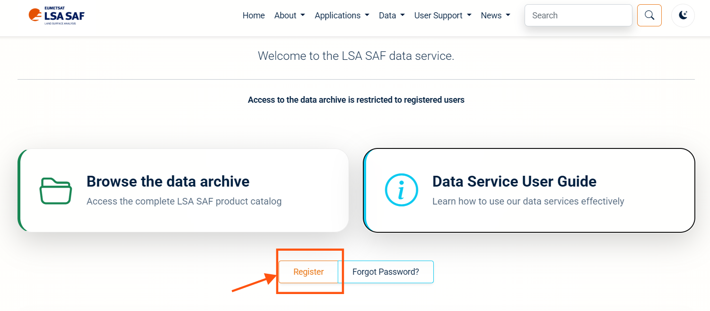
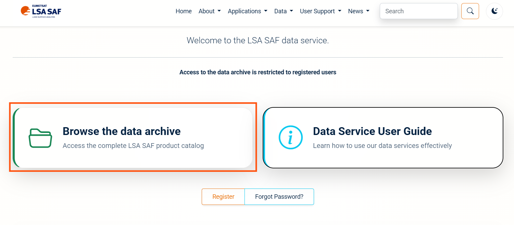

A · Setup
Terminal, repository, tools, Python environment and credentials
A · Setup B · Download & preprocess C · Zarr cube D · Explore
The pipeline uses Bash, CDO and Python, so it runs in a Linux shell. On Windows that shell is WSL2 (Ubuntu); on macOS and Linux it is your normal terminal. Pick your system once — the tabs on this page stay in sync.
- ~5 GB free disk (one month of raw METREF disk files is ~1–2 GB).
- An LSA SAF account (free) — registration can take a while to be activated, so do step 6 first if you have not registered yet.
- Admin rights on Windows for installing WSL (once).
1 · Get a Linux terminal
Install WSL2 + Ubuntu (once). Start menu → type PowerShell → right-click → Run as administrator:
wsl --install -d UbuntuRestart Windows when asked. If the command prints help text instead of installing, run wsl --list --online and then wsl --install -d Ubuntu again.
First launch. Open Ubuntu from the Start menu and wait for the initialisation. Choose a Linux username and password (the password is not echoed while you type — that is normal).
Check it is WSL 2. In PowerShell:
wsl --list --verbose # Ubuntu ... VERSION 2
wsl --set-version Ubuntu 2 # only if it shows VERSION 1Open WSL every time you work on the tutorial — any of these gives you the same Ubuntu shell:
- Start menu → Ubuntu, or
- Windows Terminal → ⌄ dropdown → Ubuntu, or
- type
wslin PowerShell /cmd, thencd ~.
Your prompt now looks like yourname@PC:~$. Everything below runs in this window.
Keep the project under ~/ (e.g. ~/projects/tutorial-repo), not under /mnt/c/.... Windows drives mounted in WSL are 5–10× slower for thousands of small files (raw NetCDF, Zarr chunks). To see the files from Windows, run explorer.exe . inside the folder or open \\wsl$\Ubuntu\home\<you>\projects in File Explorer.
Official guide: https://learn.microsoft.com/en-us/windows/wsl/install
Open Terminal (⌘ + Space → “Terminal”). Install Homebrew if you do not have it.
Open your terminal (Ubuntu/Debian: Ctrl + Alt + T). Commands below use apt; use your distribution’s package manager otherwise.
2 · Install system tools
In the Ubuntu window:
sudo apt update
sudo apt install -y git wget curl ca-certificates cdobrew install git wget cdosudo apt update
sudo apt install -y git wget curl ca-certificates cdoThen install uv, the Python package and environment manager used by this project (it also downloads the right Python version for you):
curl -LsSf https://astral.sh/uv/install.sh | sh
source "$HOME/.local/bin/env" # or open a new terminalCheck everything in one go:
git --version && wget --version | head -n1 && cdo -V 2>&1 | head -n1 && uv --versionpip/uv cannot install CDO. If apt/brew is not an option, use a conda-forge environment: conda install -c conda-forge cdo and make sure cdo is on your PATH.
3 · Clone the repository
mkdir -p ~/projects && cd ~/projects
git clone https://github.com/khizerzakir/tutorial-repo.git
cd tutorial-repoAll commands in this tutorial run from the repository root (~/projects/tutorial-repo). If you get lost: cd ~/projects/tutorial-repo. Already cloned earlier? Update with git pull.
4 · Create the Python environment
- 1
-
Creates
.venv/with the exact versions fromuv.lock, including JupyterLab for the notebooks. - 2
- Must print zarr 3.x. The cube builder refuses to run with Zarr 2.
uv run
02_preprocess_cdo.sh calls python3 internally (YAML + grid helper). Starting it as uv run bash code/02_preprocess_cdo.sh … puts the project environment first on PATH, so those imports work. Alternatively activate the environment once per terminal: source .venv/bin/activate.
python3 -m venv .venv
source .venv/bin/activate
python -m pip install --upgrade pip
python -m pip install -r requirements.txt jupyterlabPython ≥ 3.12 is required (Ubuntu 24.04 ships 3.12; on 22.04 use uv). Never use sudo pip. In this mode drop the uv run prefix from the commands in this tutorial.
5 · Open the project in VS Code (optional, recommended)
Install VS Code on Windows (not inside Ubuntu).
Extensions (
Ctrl+Shift+X): WSL, Python, Jupyter (all by Microsoft).In the Ubuntu window, from the repository root:
code .The first run installs the VS Code server inside WSL. The bottom-left corner must show WSL: Ubuntu. Open a terminal inside VS Code with
Ctrl+`— it is already in the repository root.When you open a notebook, pick the kernel
.venv/bin/python(top-right “Select Kernel”).
Install VS Code with the Python and Jupyter extensions, then from the repository root run code . (enable it via Command Palette → Shell Command: Install ‘code’ command in PATH). Select the .venv/bin/python kernel for notebooks.
Install VS Code with the Python and Jupyter extensions and run code . from the repository root. Select the .venv/bin/python kernel for notebooks.
6 · LSA SAF credentials
Register on the LSA SAF Data Service and activate your account.

Create your private settings file and open it:
cp code/.env.example code/.env
nano code/.env # or: code code/.envFill in your account and the product you want. The download script reads exactly these names:
LSASAF_USERNAME="your_username"
LSASAF_PASSWORD="your_password"
SAMPLE_YEAR=2015
SAMPLE_MONTH=06
VARIABLE_NAME=METREF
URL="https://datalsasaf.lsasvcs.ipma.pt/PRODUCTS/MSG/METREF/NETCDF"code/.env is listed in .gitignore — never commit it, never paste it in screenshots or chats.
Browse the product folders to confirm the URL and that your month exists:
